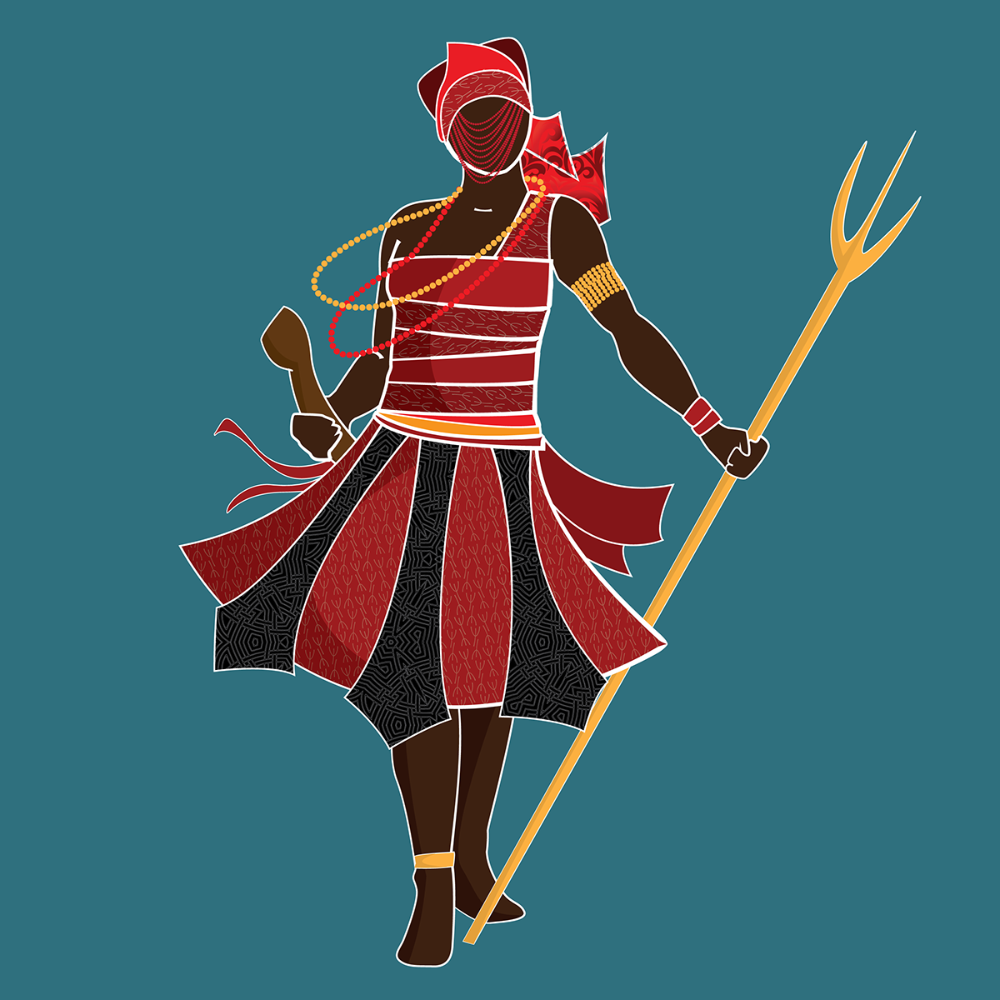

Esú é um Orixá primordial ligado à ordem, ao movimento, à comunicação e à fecundação, responsável por abrir caminhos, vigiar mercados e habitar encruzilhadas. A figura de Esú é complexa e antiga, sendo um dos primordiais na criação divina, muitasa pessoas não sabem a diferência de esú, para exú, por mais que os dois trabalhem com caminhos, existe u grande significado histórico sendo eles:Ao escrever EXU ou ESU já se define algo simples, na cultura Yorubá ESU é Orisá e assim pela grafia já fica determinado um contexto nagô yorubá, culto de nação e olhar africano. . EXU pode ser pertinente a Exu na Umbanda e mesmo a algum texto que se refere ao Candomblé.
Este site é dedicado para esú.